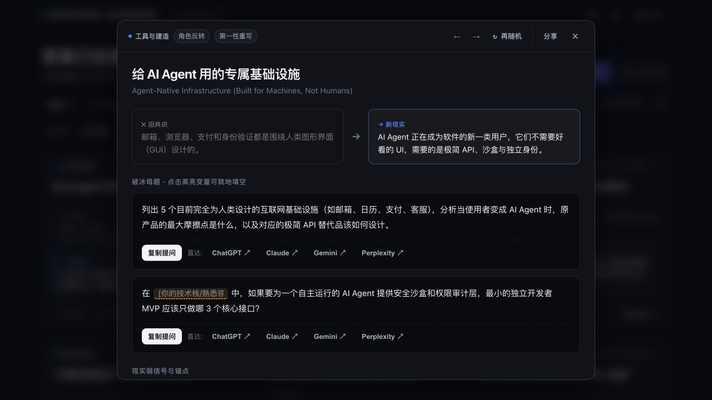

Website / exploration tool
DISCOVERY-TAXONOMY
Break Unknown Unknown
Find a direction worth exploring: compare old assumptions with new shifts, then start with a fillable AI seed prompt.

What it is
A bilingual collection of exploration cards across building, business, content, cognition, career and life. Each card contrasts an old assumption with a new shift and includes real-world signals and seed prompts. Fill in your own context, copy a question and explore a direction you had not considered.
Features
- Six exploration arenas and five lenses, including cost collapse, role inversion and invisible friction
- Compare assumptions and shifts, with linked signals and searchable tags
- Fill prompt variables, copy a question or open it in ChatGPT, Claude, Gemini or Perplexity
- Random discovery, Chinese/English switching and shareable filter or card links
Screenshots
